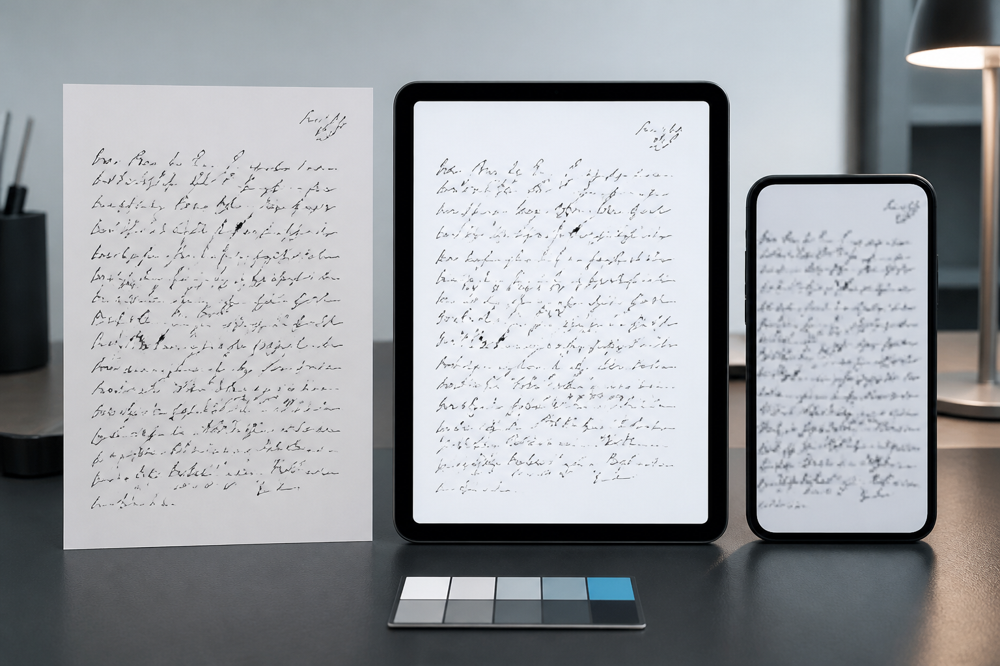
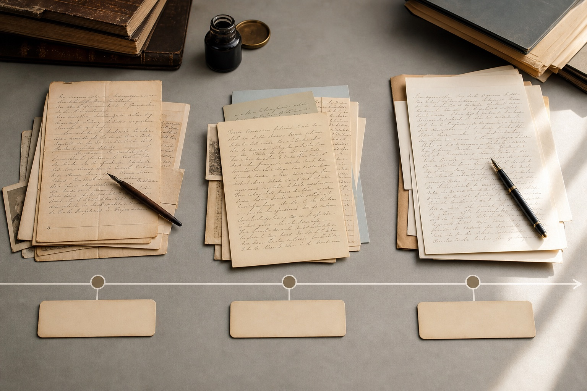

笔迹鉴定图片被压缩会丢失什么？原图、截图与扫描件比较
笔迹鉴定图片被压缩会丢失什么？原图、截图与扫描件比较，围绕模仿笔迹、模仿签名、模仿签字和笔迹鉴定说明自然样本与文件整理方法。

笔迹鉴定图片被压缩会丢失什么？原图、截图与扫描件比较，围绕模仿笔迹、模仿签名、模仿签字和笔迹鉴定说明自然样本与文件整理方法。

笔迹鉴定为什么重视同期样本？形成时间与自然变化说明，围绕模仿笔迹、模仿签名、模仿签字与笔迹鉴定说明自然样本和文件整理方法。

笔迹鉴定材料准备说明，介绍待分析文件、自然对比样本、原件、扫描件、相同字和形成时间的整理方法。

从字形结构、运笔方式、书写力度、速度与整体布局等角度介绍常见观察方法。

对比相同字形、转折习惯、起收笔、连笔和重复特征，形成较完整的观察记录。

长期形成的书写动作会在字形比例、笔画顺序和空间组织上留下稳定特征。

建议准备不同时间、不同内容且自然书写的清晰样本，以便获得更多观察依据。

样本数量、分析范围、材料复杂程度和交付时间会影响费用与完成周期。
当前展示最新 8 篇内容，更多文章将持续更新。
清晰原件能保留更多笔画和力度信息；只有图片时，可以先评估清晰度与可观察范围。
建议准备不同时间形成、内容相近且自然书写的多份样本。
通常观察字形结构、笔画顺序、起收笔、连笔、力度和整体空间布局。
可用于部分形态特征观察，但复印质量可能影响细节判断，应优先提供高清扫描件或原件。
样本数量、材料清晰度、分析范围和交付要求都会影响完成周期。